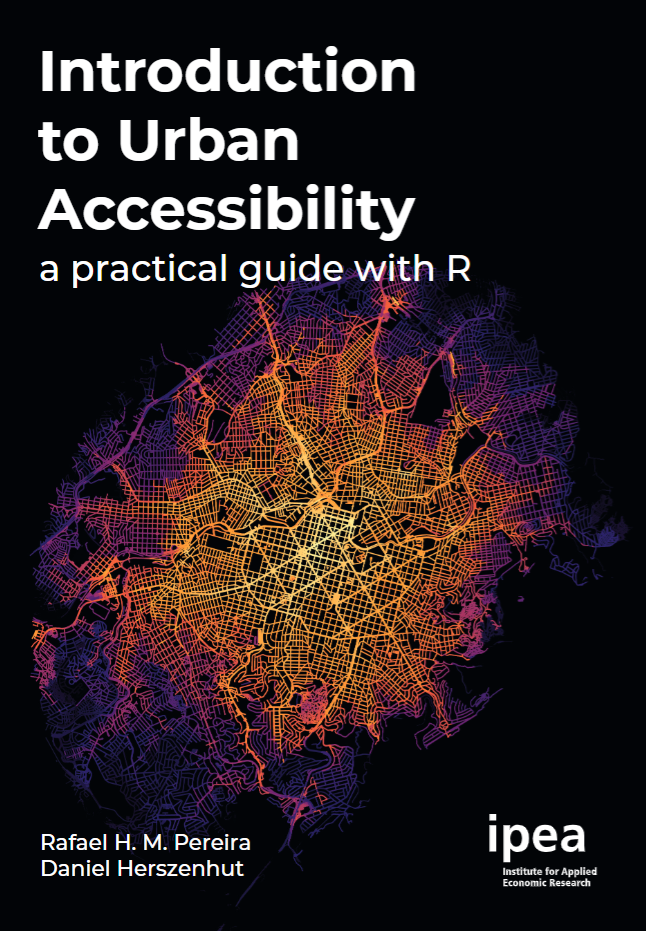

![]()
| Section | Description |
|---|---|
| 1: Introduction to urban accessibility | The first section presents the concept of urban accessibility, clarifies the differences between accessibility and mobility, and presents the main indicators used in the literature to measure urban accessibility. |
| 2: How to measure urban accessibility | The second section teaches how to calculate urban accessibility estimates in R using open data and the {r5r} and {accessibility} packages, and how to visualize the results with maps and charts. |
| 3: Public transport data | The third section presents the GTFS specification of public transport data, and shows how to work and analyze GTFS data using the {gtfstools} package. |
| 4: Impact assessment of transportation projects | The fourth section brings a case study to illustrate how the combined knowledge of previous chapters can be used to assess the impact of transportation policies on urban accessibility conditions. |
| 5: Data from the Access to Opportunity Project | Finally, the fifth section shows how to download, analyze and visualize the data of the Access to Opportunities Project (AOP), which brings detailed data on land-use patterns & accessibility for Brazilian cities. |
Introduction to urban accessibility
a practical guide with R

Preface
Accessibility is the ease with which people can reach places and opportunities such as jobs, health and education services, cultural activities, green areas, etc. The accessibility conditions of a city or neighborhood depend on the efficiency and connectivity of the transport network and on the proximity between people and activities. The topic of accessibility has been receiving increasing attention from transportation agencies, funding institutions, decision makers and researchers in the fields of urban and transport planning (Papa et al. 2015; Boisjoly and El-Geneidy 2017). In the last few years, we have seen a growing number of scientific papers (Miller 2018; van Wee 2021) and books (Levine, Grengs, and Merlin 2019; Levinson and King 2020) that deepen our understanding of urban accessibility issues. However, there are currently no books or articles that serve simultaneously as introductory material to the subject and as a practical manual to teach computational methods to calculate and analyze accessibility data. The lack of this type of material helps to explain, at least in part, why several transportation agencies and analysts still face challenges to incorporate accessibility issues and indicators into the day-to-day planning and research practice (Silva et al. 2017; Büttner 2021).
The aim of this book is to equip its readers with the fundamental concepts, the data analysis skills and the processing tools needed to perform urban accessibility analyses and transportation projects impact assessments. The book was written with the problems faced by public managers, policy makers, students and researchers working on urban and transportation planning in mind. Hence, the book is essentially practical. All the material in the book is presented with reproducible examples using open data sets and the R programming language.
This book assumes the reader has a basic knowledge of the R programming language. If you want to familiarize yourself with it, we recommend the books below:
- R for Data Science
- Geocomputation with R
- Data Science in R [Portuguese]
Book structure
This book is divided into 5 sections:
Reproducing the book in your computer
To reproduce the book in your local machine, you must first download its source code. This can be done with git or manually, by clicking on the following link: https://github.com/ipeaGIT/intro_access_book/archive/refs/heads/main.zip. If you choose the second approach, you must also unzip the contents of the .zip file to a new folder.
This book was written with the Quarto publishing system. All the code used to write and publish it can be found in this repository.
To render the book, you must have Quarto installed on your computer. Reproducing the chapters also requires the {renv} R package, which manages the book dependencies.
After installing book dependencies, you can render each chapter as you would normally render any Quarto/Rmarkdown file. To run all chapters at once, use one of the following commands:
quarto::quarto_preview()
quarto::quarto_render()For more details on how to install the book dependencies and or how to run the book content locally, please see the installation instructions in the book repository.
Running the book examples in the cloud with binder
A binder is a tool that allows one to use a browser, such as Chrome and Firefox, to run code in the cloud. The book is set up so that its code can be run using a server published by mybinder. To do this, click the icon below: after a few moments, an RStudio Cloud session will start running on your browser. This session includes all the files and data needed to run the code.

Please note that mybinder sessions are limited to 2 GB of RAM. This restriction can prevent Chapter 6 from running properly. If you use binder, we suggest that you do not attempt to render the entire book with the Quarto, as shown above.
License
 The material in this book may be reproduced and displayed for educational or informational purposes, provided credit is given to the original authors and the original work is cited. This book can be shared on websites and free and open online repositories only if it is made clear to users the terms of use of this material and who the copyright holder is, the Institute for Applied Economic Research (Ipea). Any commercial or for-profit use is prohibited. The creation of derivative works is prohibited. This license is based on studies about the Brazilian Copyright Law (Law 9.610/1998).
The material in this book may be reproduced and displayed for educational or informational purposes, provided credit is given to the original authors and the original work is cited. This book can be shared on websites and free and open online repositories only if it is made clear to users the terms of use of this material and who the copyright holder is, the Institute for Applied Economic Research (Ipea). Any commercial or for-profit use is prohibited. The creation of derivative works is prohibited. This license is based on studies about the Brazilian Copyright Law (Law 9.610/1998).
How to cite the book
If you use the material in this book, please cite the book using the following reference:
- Pereira, Rafael H. M. & Herszenhut, Daniel. (2023) Introduction to urban accessibility: a practical guide with R. Ipea - Institute of Applied Economic Research.
Acknowledgements
This book was written under a partnership between the Institute for Applied Economic Research (Ipea) and the Secretariat of Mobility and Regional and Urban Development (SMDRU) of the Ministry of Regional Development (MDR) of the Brazilian federal government. The authors are grateful for the comments and suggestions from Lucas Mation. The authors would also like to thank the contributions of Anna Grigolon, Benjamin Büttner and Aaron Nichols for proofreading the English version of the book. Any remaining errors are the sole responsibility of the authors.